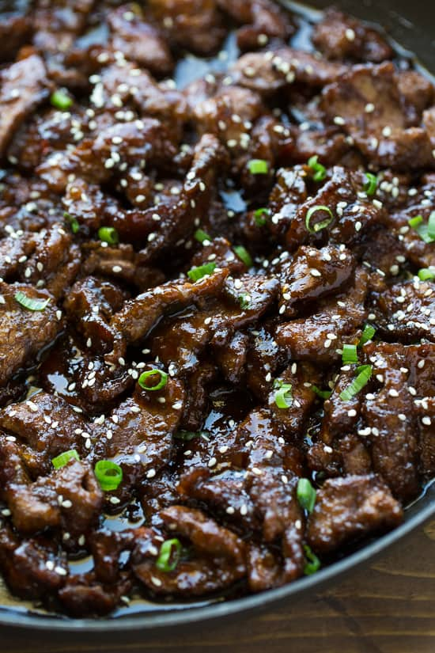

Recipe for Lasagna

Beef Teriyaki
The beef teriyaki consists of soy sauce, mirin, sesame oil, fish sauce, ginger, garlic and brown sugar.
The sauce gets nice and thick with a simple cornstarch slurry (1 teaspoon cornstarch + 1 tablespoon cold water).
This classic recipe uses beef and a delicious teriyaki sauce for a tender and juicy beef dish. Perfect for ulam
or as a rice topping!
Ingredients
- 1 1/2 cups uncooked glutinous white rice
- 1 2/3 cups water
- 1 pound boneless beef sirloin steak (3/4 inch thick)
- 2 tablespoons cornstarch
- 1 (14 ounce) can beef brothA
- 2 tablespoons soy sauce
- 1 tablespoon packed brown sugar
- ¼ teaspoon garlic powder
- 4 cups fresh broccoli florets
Steps
- In a saucepan bring water to a boil. Add rice and stir. Reduce heat, cover and simmer for 20 minutes.
- Meanwhile, slice beef into very thin strips.
- In a mixing bowl, combine the cornstarch, broth, soy sauce, sugar and garlic powder. Mix thoroughly.
- In a large skillet, over medium/high heat, saute the beef strips until browned and juices evaporate.
- Stir broccoli and cornstarch mixture into meat. Cook until mixture boils and thickens, stirring frequently. Serve over the cooked rice.